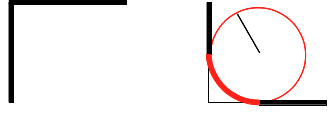

Свойство border-radius.
Свойство border-radius задаёт радиус скругления углов элемента. Если у блока есть рамка, то скругляется и она.

Свойство принимает от одного до четырёх аргументов в любых единицах длины, разделённых между собой пробелом:
- 1 — радиус указывается для всех четырёх углов.
- 2 — первое значение задаёт радиус верхнего левого и нижнего правого угла, второе значение — нижнего левого и верхнего правого.
- 3 — первое значение задаёт радиус для верхнего левого угла, второе — одновременно для верхнего правого и нижнего левого, а третье — для нижнего правого уголка.
- 4 — по очереди устанавливает радиус для верхнего левого, верхнего правого, нижнего правого и нижнего левого угла.
Пример:
border-radius: 50%;По отдельности углы можно закруглять с помощью свойств border-top-left-radius, border-top-right-radius, border-bottom-right-radius и border-bottom-left-radius.
Чтобы задавать разные горизонтальные и вертикальные радиусы скругления, нужно написать два значения через пробел в свойстве скругления угла. Первое значение задаёт радиус по горизонтали, второе — по вертикали.
Пример:
/* Горизонтальный радиус 30px, вертикальный – 15px. */
border-top-right-radius: 30px 15px;Разные горизонтальные и вертикальные радиусы можно задавать и в свойстве border-radius. Для этого нужно использовать /.
Пример:
/* Горизонтальный радиус всех углов 10px, вертикальный – 5px. */
border-radius: 10px / 5px;
/* Разные горизонтальные и вертикальные радиусы у каждого угла. */
border-radius: 10px 20px 30px 40px / 5px 15px 25px 35px;